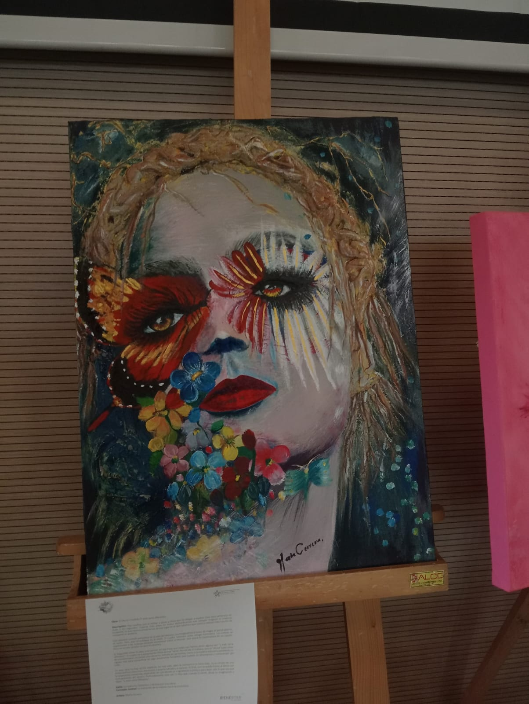
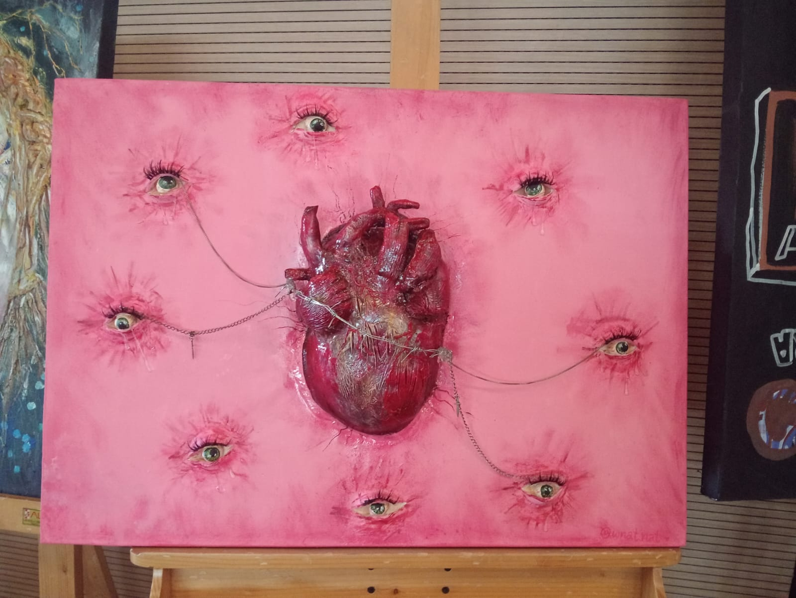
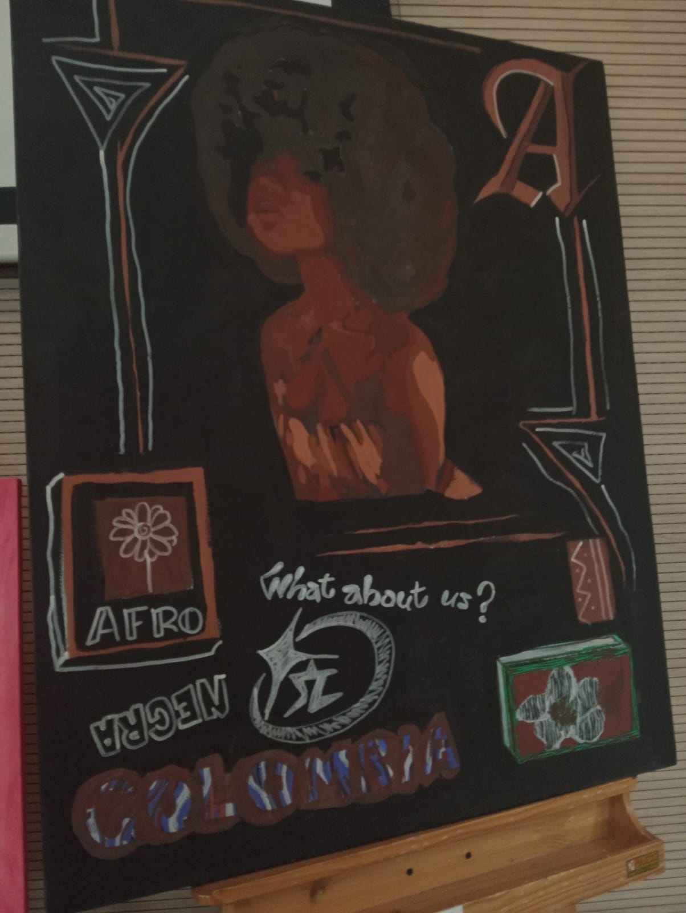
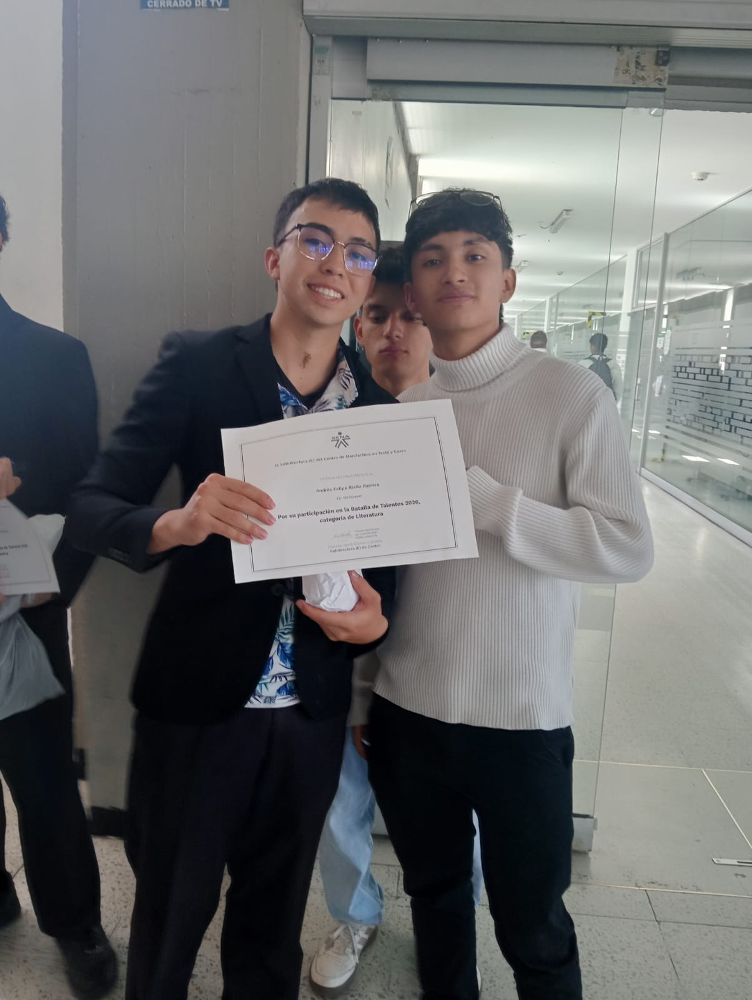
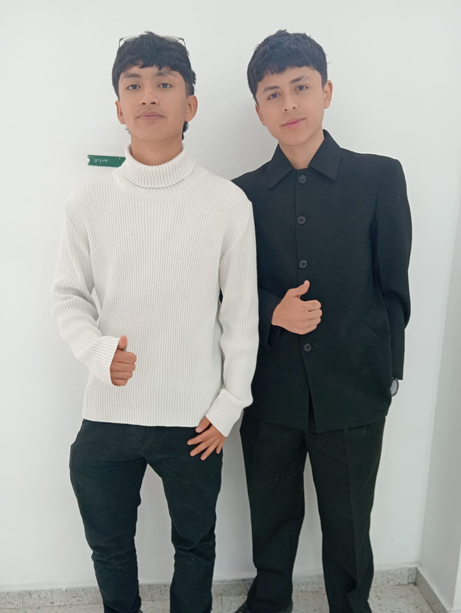

Centro de Manufactura en Textil y Cuero
Hoy, dejando a un lado las tecnologías más modernas y mi carrera como programador, quiero mostrarles algo diferente: los talentos ocultos de quienes se forman en el SENA. La vida también está en el talento innato de cada uno de nosotros.
Explorar el eventoExperiencia visual
Al ingreso del auditorio

Increíble representación de los lazos de la vida y los lazos del destino, plasmados en el órgano vital que nos da la vida. Una obra que habla en silencio y emociona con cada trazo.

La cultura representada en su máximo esplendor: el corte clásico, los gustos y el idioma característico de una herencia que inspira. Sencillamente magnífico el nivel de esta pintura.
"Las habilidades artísticas de los aprendices de todas las fichas del centro estuvieron presentes desde el primer momento. Sin duda, una de mis experiencias favoritas del evento."
Presentación musical
Un competidor de la carrera ADSO demostró un talento musical profundamente marcado. Al escucharlo tocar se percibe su pasión por el instrumento: claridad, armonía y una presencia escénica que transmite tranquilidad y alegría al público.
Ficha 3227025 · ADSO
Orgulloso de compartir ficha con estos talentos

"Voy tarde para el Sena"
Una persona increíble cuyo cuento refleja fielmente su personalidad. Me alegra mucho haber podido tomarme esta fotografía con él; espero que este sea un gran paso para seguir demostrando su talento a lo largo de su vida.

Guitarra · Batalla de Talentos
Nos demuestra que los talentos salen a la luz desde la confianza y el amor por hacer las cosas bien. Le agradezco por permitirme tomar esta fotografía; que siga forjando su camino desde los valores que lo representan.